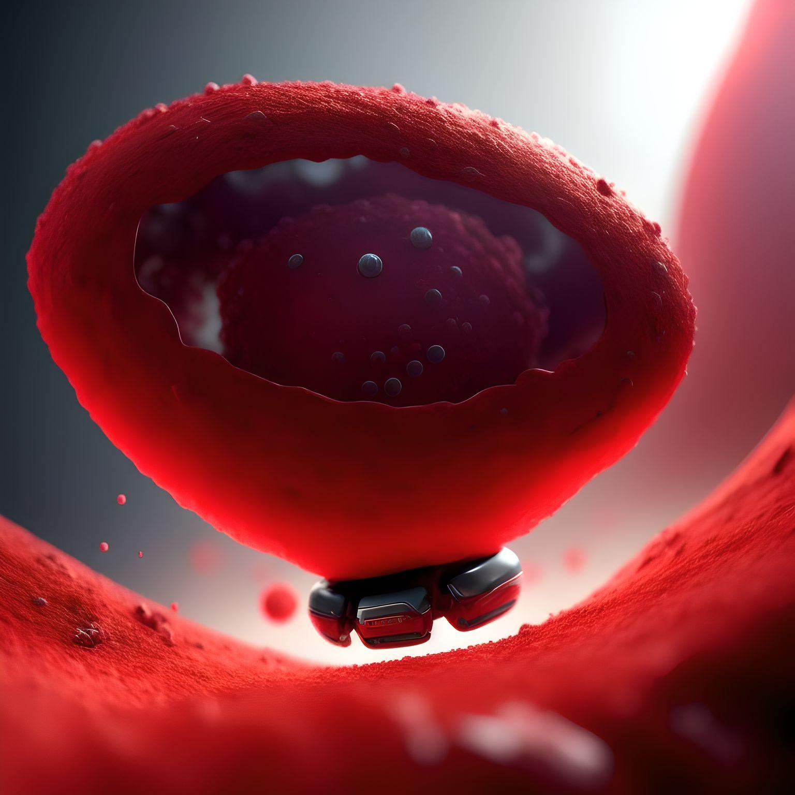

Auch die Zukunft hält einiges im Bereich Software Engineering bereit.
Die Vergangenheit hat gezeigt, dass der Mensch versucht, alles so gut es geht, zu Autonomisierung. Dementsprechend wird das auch in der Zukunft weiterhin so sein. Durch die Autonomisierung passieren weniger Fehler und Prozesse laufen effizienter ab.
Deswegen könnte ein Meilenstein der Zukunft sein, eine vollständige autonome Softwareentwicklung

Softwareentwicklungstools sind in der Lage, Software von Grund auf neu zu erstellen, ohne dass ein Mensch dafür benötigt wird. Somit wird die Arbeit der Softwareentwickler erleichtert. Sie müssen dafür nur die verschiedenen Anforderungen angeben. Der Rest erledigt alles der Computer von alleine. Er erstellt den gesammten Quellcode alleine.
Die Vergangenheit hat auch gezeigt, dass immer mehr Fortschritte der Software, auch nutzen für die Medizin haben.
In Zukunft könnten wir zum Beispiel Nanoroboter in der Medizin nutzen.
Diese sind mikroskopisch klein, sodass sie in den Körper injiziert werden können. Dort können sie verschiedene Aufgaben verrichten. Sie können sich an Blutzellen andocken und für verschieden Aufgaben von Nutzen sein
Sie können zielgenau kranke Zellen erkennen und den passenden Medikamenten direkt in die kranken Zellen verabreichen. Sie könnten bei Krebs, bei der Erkennung und Behandlung helfen, aber auch bei der allgemeinen Erkennen von Krankheiten.